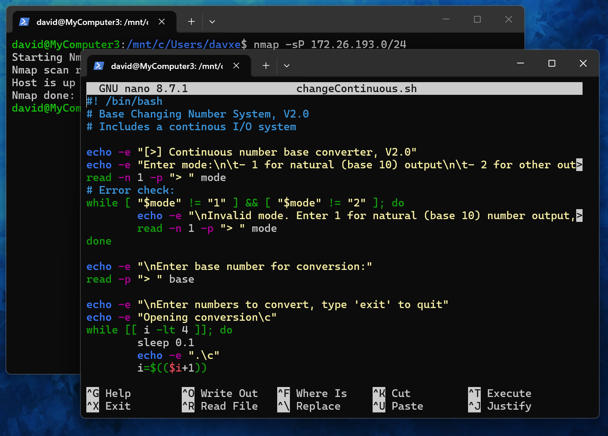
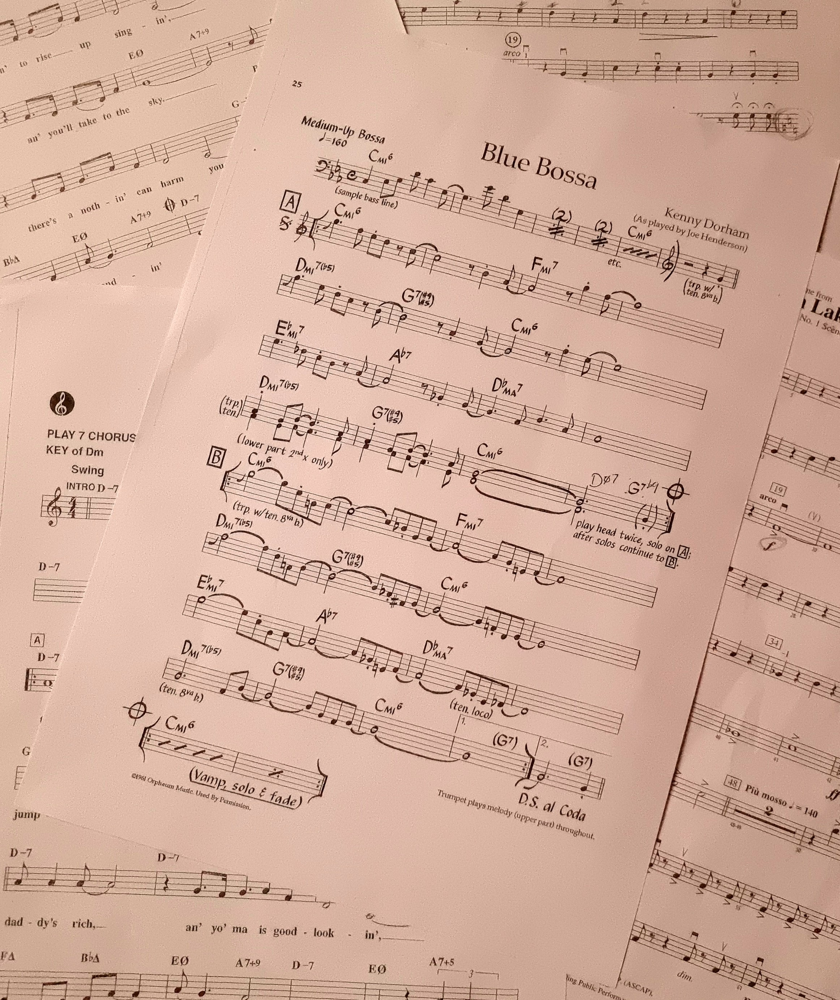
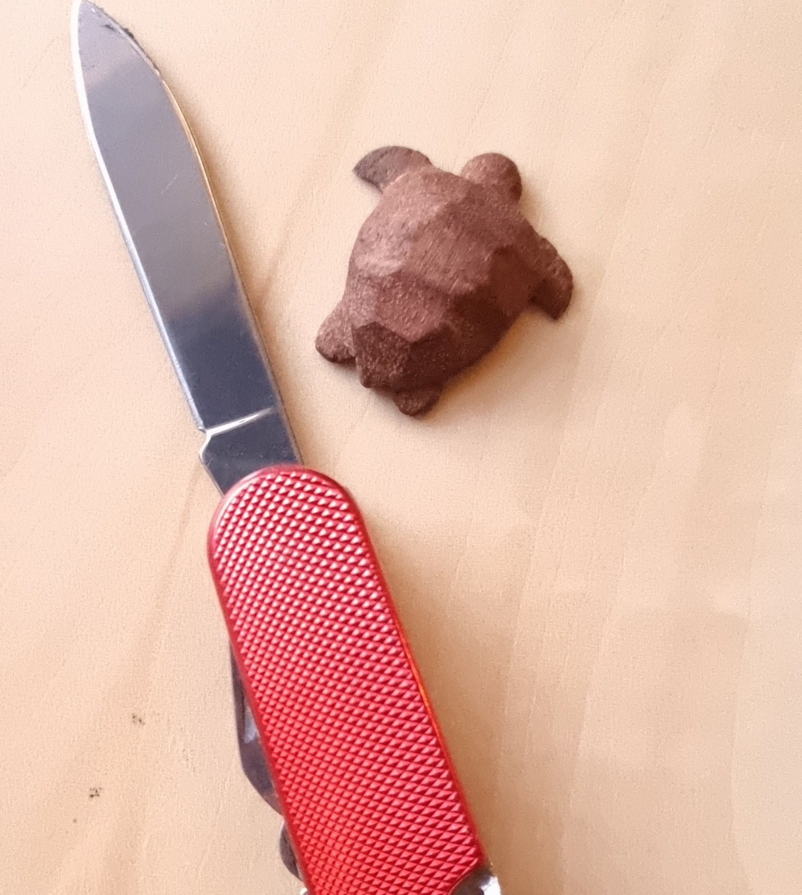

[ Home ]
- Music
- Crafts
- Electronics
- Blank
[ Home ]
Wecome, dear traveller, to my corner of the internet. I do hope that line isn't cliched, I just found it on a friend's site and thought it was nice.
I started out with several complex and actually useful ideas, all of which proved too complex to make.
So, here's a rather dull but hopefully well-designed website about myself.
Name: David
Age: 16
Height: Shorter than I should be
Interests: Playing music, building things, and coding
This page was based off the Linux terminal, because it looks nice.
It was designed to be entertaining, so please take everything unreasonable on this page and on sibling pages with a grain of salt.
All images, text, and other media used are either mine, used with permission, or hacked from the dark web and so free from copyright.
Information from this page is not intended for use by outside parties, and copying of the content on this... [!] ERROR 755: ATTENTION-SPAN TIMEOUT
Isn't this such a nice aesthetic...


A whole bunch of instruments, and hopefully videos if I managed to get those working.
Explore Music Page ⟶
Things I spend way too long making, but are hopefully kind of cool.
Explore Crafts Page ⟶Just the ending page, because I thought the menu looked better with five items.
Explore Sports Page ⟶